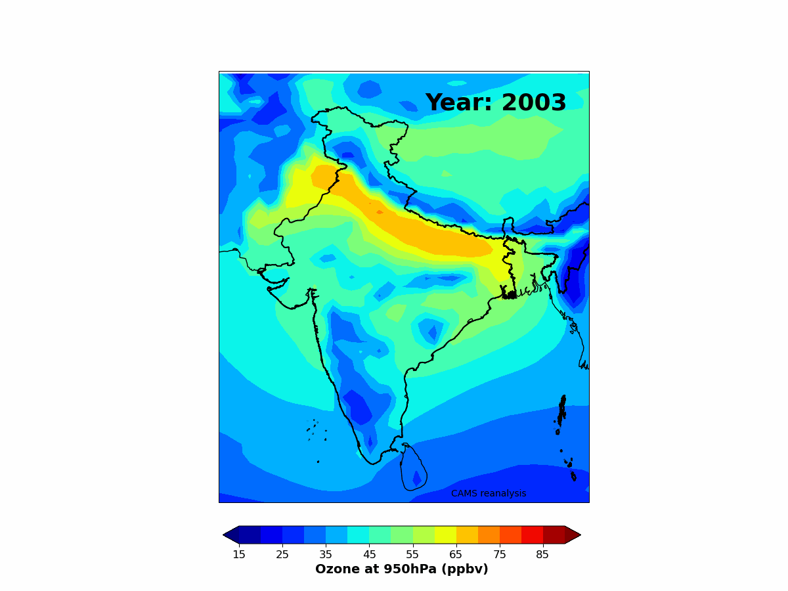

In situ and remote-sensing measurements
Ground-Based
O3, NOx, NOy, CO, SO2, and PM2.5.
Remote Sensing
Pandora, MAX-DOAS, and FTIR.
Balloon-Borne
Ozonesonde and radiosonde.
Gas Chromatography
NMHC analysis.
Research
My work includes in situ observations, satellite retrievals, and meteorological reanalysis to analyse and study ozone and its precursor variability over South Asia, including pristine Himalayan regions.

Toolkit
O3, NOx, NOy, CO, SO2, and PM2.5.
Pandora, MAX-DOAS, and FTIR.
Ozonesonde and radiosonde.
NMHC analysis.